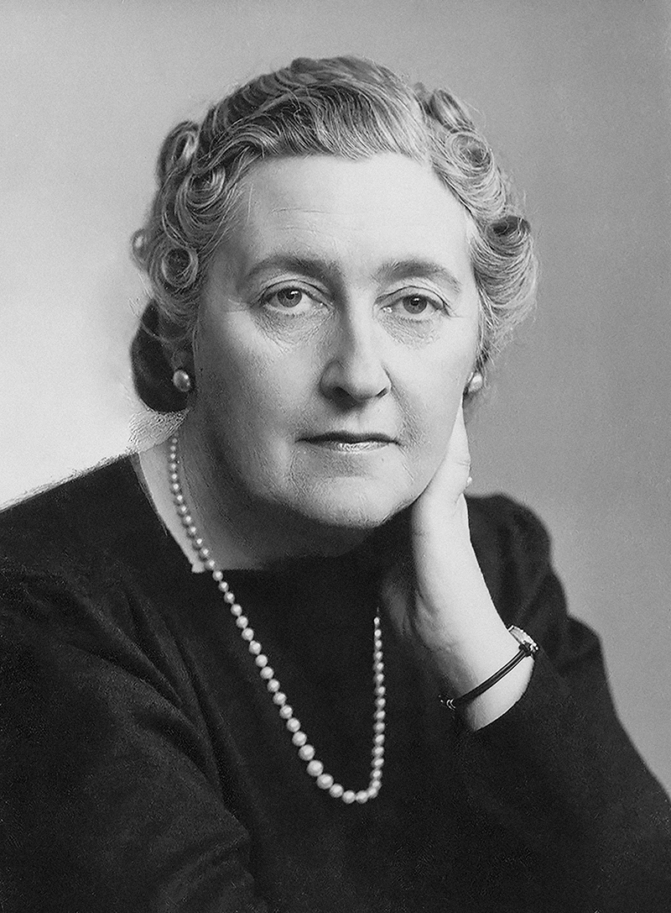

Quem foi Agatha Christie, a Rainha do Crime?
Agatha Christie foi uma escritora britânica, nascida em 15 de setembro de 1890, em Torquay, Reino Unido. Ela começou a escrever seus primeiros poemas e contos na adolescência, por volta dos 18 anos, em 1908. Aos 19 anos, escreveu seu primeiro romance (que foi rejeitado pelas editoras), mas foi aos 26 anos, em 1916, que ela criou O Misterioso Caso de Styles, sua primeira obra publicada que apresentou ao mundo o detetive Hercule Poirot. E, ela morreu de causas naturais em 12 de janeiro de 1976, aos 85 anos, em sua residência na Inglaterra. Sua saúde já estava fragilizada pela idade avançada e ela faleceu pacificamente após contrair uma pneumonia, sem nenhum mistério ou crime envolvido.

Curiosidades sobre a Rainha do Crime
→ Quer conhecer mais sobre a vida e as obras de Agatha Christie? Aqui estão algumas curiosidades interessantes:
- Nome verdadeiro: O seu nome verdadeiro é Agatha Mary Clarissa Miller. Agatha Christie sendo seu nome artístico.
- Especialista em veneno: Ela tinha um grande conhecimento sobre venenos, pois trabalhou como enfermeira durante a Primeira Guerra Mundial, o que a ajudou a criar enredos complexos e realistas em seus romances de mistério.
- Recorde de vendas: Agatha Christie é uma das autoras mais vendidas de todos os tempos, com mais de 2 bilhões de cópias de seus livros vendidos em todo o mundo.
- Personagens icônicos: Ela criou personagens icônicos como Hercule Poirot e Miss Marple, que se tornaram figuras lendárias no gênero de mistério.
- Desaparecimento: Em dezembro de 1926, Agatha Christie desapareceu por 11 dias na Inglaterra após traição do marido e luto pela mãe. Ela foi achada em um hotel sob nome falso e alegou amnésia, gerando teorias de surto ou vingança.
Principais livros de Agatha Christie
→ Agatha Christie escreveu mais de 70 romances e contos, muitos dos quais se tornaram clássicos do gênero de mistério. Alguns de seus livros mais famosos incluem:
- "O Assassinato de Roger Ackroyd" (1926): Obra aclamada que revolucionou o gênero policial devido ao seu narrador e à grande reviravolta no desfecho.
- "Assassinato no Expresso do Oriente" (1934): O detetive Hercule Poirot precisa solucionar o assassinato de um passageiro americano em um luxuoso trem preso pela neve.
- "Morte no Nilo" (1937): Poirot investiga um crime passional a bordo de um navio a vapor durante um cruzeiro pelo rio Nilo.
- "E Não Sobrou Nenhum" (1939): Dez pessoas sem ligação aparente são convidadas para uma ilha isolada e começam a morrer uma a uma, sem a presença de um detetive tradicional. É um dos livros mais vendidos do mundo.
- "Os Crimes ABC" (1936): Um assassino em série desafia Poirot deixando um exemplar do guia ferroviário ABC ao lado dos corpos em ordem alfabética.